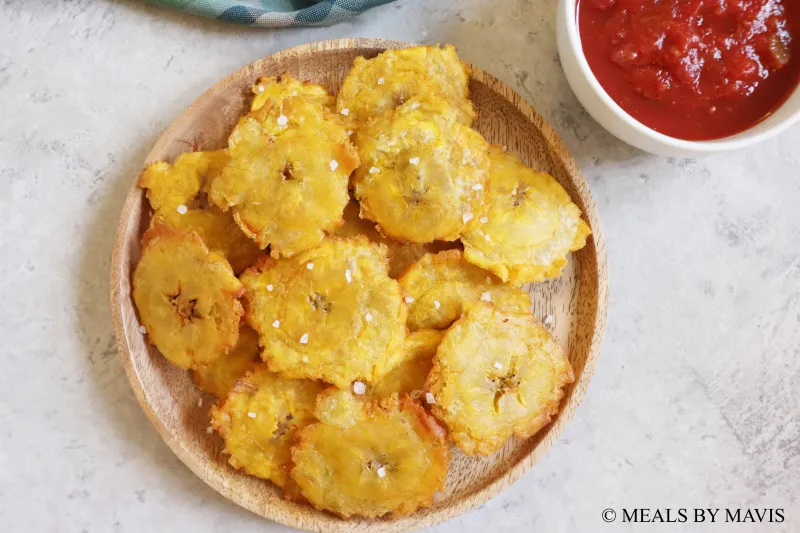

Tostones
Back To Home

Ingredients
4 servings
- 2 green plantain
- 10 tablespoons oil for frying
- 6 cups of cold water
- Salt to taste
Directions
- Peel plantain and cut into 1-inch slices. Fill a bowl with 6 cuos of cold water.
- Heat oil in a large deep skillet over medium-high heat. Add plantains in an even layer and fry on both sides
until golden brown, about 3-1/2 minutes per side.
- Transfer fried plantain slices to a cutting board and flatten them with a small plate.
- Dip flattened plantains in the bowl of cold water.
- Reheat oil in skillet over medium-high heat. Cook flattened plantains for about 1 minute on each side.
- Season to taste with salt and serve immeadiately.
Nutrition Facts
Per Serving
Calories: 136
Fat: 3g
Carbs: 29g
Protein: 1g